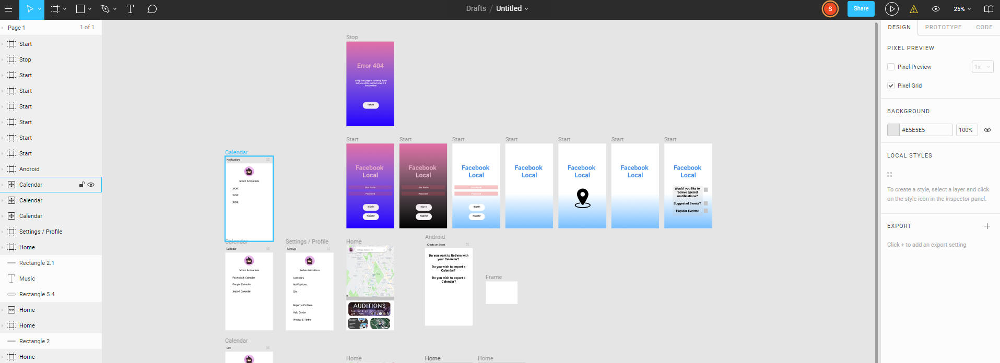
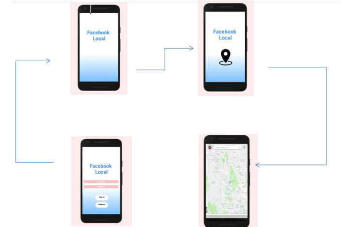

Facebook local is a mobile social media app that allows users to find Facebook
events occurring near the user. While this app has the potential to provide
people with spontaneous outings, access to unknown events and plan an event
solely from their cell phone, it doesn’t seem to be getting the kind of
popularity one would expect. While it is difficult to compare the main mobile
Facebook app (which holds ~90
million reviews on the Google Play Store) to its partner apps such as Facebook
Messenger(which holds ~62 million
reviews on the Google Play Store), apps like Facebook Local are nearly unheard
of (with only ~10,000 Reviews on the
Google Play Store). It is shocking to see that such a useful app is being
ignored by the general public, so I am going to try to find a potential reason.
A Case Study on my findings during a 48-hour design challenge. I decided to
analyze an app that presently existed but didn't hold more than 10k reviews on
the Google Play Store. I chose this because reviews are often written when
someone has an extremely good or bad experience using an app. And on average
only 15% of the people that download an app will leave a review without a
special reason. Therefore, if an app had a very low number of reviews, it could
mean that the app could have room for revision or another app on the market fill
the app's niche better. I ultimately was surprised when I discovered how
Facebook Local only had about 9K reviews on it when its parent and sibling apps
such as Facebook Messenger held millions of reviews. So, I decided to dive in
and learn as much as I could about the interface associated with Facebook
Local. Purpose of the
project - To learn what could improve the number of people using
Facebook Local and get a larger number of reviews.
Objective -
I needed to develop: a wireframe that worked just like Facebook Local, conduct
research on negative reviews, and create a second wireframe using the results
from the research.
Approach -
I decided to go through my design process the way I have on my previous
projects: Learn, Explore, Select, Develop, Refine, Deliver.
Learn about the users, the
app, other competitive products, and modern research.
Now, as expected, this app
is meant to be used directly in conjunction with Facebook. So, the app relies
heavily on people informing people of Local events based on their interests and
liked groups. However, despite the app covering many potential needs of a
user, it does have the ability to overwhelm a user. For instance, after
surveying some engineering students, I learned many students cannot keep their
main Facebook app's notifications on because they know they will get sucked into
seeing live feed and updates and stories that they would rather see later. This
fear of viewing certain notifications prevents them from seeing all possible
notifications such as local events occurring in one's neighborhood.
This means that the main
people that would use an app like Facebook local are the people that would also
not want to view every single notification that comes though as it comes though.
This type of app could be useful to everyone with access to Facebook. Whether it
be people who work at a desk all day or students that need to prevent
procrastination. The target audience for this app could possibly be any person
that wants to be involved in their community but is also too busy to view every
Facebook notification. During my survey I found a few additional answers, but
for the focus of this 48-hour challenge, this will be the main group I will be
targeting: busy young adults and adolescents that use Facebook regularly.
So, it is possible that
Facebook developed this app fully aware of that issue. After all, it would be an
effective way to get people to stay on Facebook even if they can't spend the
time to use the entire app. But no matter the reason, let's discuss the apps
purpose. Its main functions are it has all the capabilities of Facebook's events
pages but all on a mobile device. Every function and feature that events on
Facebook have can be found here. It allows users to see which of their friends
are going to a certain event, display interests in possible events, and
ultimately discover new events. For the purpose of these 48 hours, these are the
functions I will focus on.
Competitive Products
Due to the niche market of
this product, I will ignore competitors for this case study outside of
Facebook.
So, I looked for some user
feedback that could be remedied by some beneficial product design alterations.
Now some of the complaints for the project were somewhat unfixable for this
challenge. For instance, several people didn’t like how they couldn’t find any
events in their rural hometowns located on the side of a mountain while
and others had issues with the app crashing and going slow. Without knowing the
nature of the events in every given area or the code layout of the app, I am
incapable of making an improved product on those two fronts. But here were some
reviews that were common that I thought were very fixable.
1.
“Wow what a letdown! This app has so much
potential! What happened? Very leggy; takes ten times as long to scroll.
Searching?! Nope, nothing popped up for my searches, however going back to FB I
can find what I was searching for. I really wanted to like this. Hopefully there
is a revamp soon.”
2.
“Took 5 minutes to install and open. Looked
around the app for 5 minutes. Slow. Incoherent. I really wanted to like this
because I like the idea, but it just doesn't serve its purpose well. So, I
uninstalled. Maybe in a few months I'll reinstall and see if things have
improved.
3.
“Very failure app. If you can mix Facebook events
with calendar features. Then it can be good. But right now. It's worst. I also
can't change my calendar view in here”
4.
“No category for conventions or Comic-Con!! Not
easy to find any comic book convention, anywhere. Only get 1 or 2 results.
Conventions are huge events and fall under multiple categories like arts,
literature, shopping etc. Needs its own category!!!”
5.
“My events, popular events, suggested events,
just show me all the events in one list with some filters. That's all. Gone back
to Facebook events page. Stupid app”
6.
“A whole app but it still is worthless. Let
people search by day, distance away, and show on map. Not too complicated.”
User
Feedback
So I looked for some user feedback that could be remedied by some beneficial
product design alterations. Now some of the complaints for the project were
somewhat unfixable for this challenge. For instance, several people didn’t like
how they couldn’t find any events in their rural hometowns located on the side
of a mountain while and others had issues with the app crashing and going slow.
Without knowing the nature of the events in every given area or the code layout
of the app, I am incapable of making an improved product on those two fronts.
But here were some reviews that were common that I thought were very fixable.
1.
2.
“Took 5 minutes to install and open. Looked around the app for 5 minutes. Slow.
Incoherent. I really wanted to like this because I like the idea, but it just
doesn't serve its purpose well. So I uninstalled. Maybe in a few months I'll
reinstall and see if things have improved.
3.
“Very failure app. If you can mix Facebook events with calendar features. Then
it can be good. But right now. It's worst. I also can't change my calendar view
in here”
4.
“No category for conventions or Comic-Con!! Not easy to find any comic book
convention, anywhere. Only get 1 or 2 results. Conventions are huge events and
fall under multiple categories like arts, literature, shopping etc. Needs its
own category!!!”
5.
“My events, popular events, suggested events, just show me all the events in one
list with some filters. That's all. Gone back to Facebook events page. Stupid
app”
6.
“A whole app but it still is worthless. Let people search by day, distance away,
and show on map. Not too complicated.” I defined pain points as points
that fequenty came up in the review process at least 3 times. I decided to focus
on those points for this user centric design. Too similar to Facebook for
people to recommend Takes too long to scroll down
for relevant events. Can’t sync Google calendar with
Facebook Events directly New category for Conventions
and Cultural events Create the Option for a color
scheme to be light or dark. More filters! Days, price, Open
or closed now, rating, busy or not busy Write solutions to pain points and include screenshots. Try
to include animations.
1.
Too similar to Facebook for people to recommend
·
There are a couple of ways to go about making
look different, but changing the color scheme seems the easiest.
Some of the reviews pointed out how they uninstalled the app extremely close to
the when they installed it. That means that we only have a short amount of time
for people to try this app before running back to the original product. So the
first thing that should be changed is the title screen. I wish that this app had
a title screen or a loading screen to help prelude the apps function while it’s
gathering data instead of showing the signature place marker icon. It is so
common with competitors different loading screen may give it a different vibe
within the first few minutes of usage.
Facebook Local Renovated
Overview
Learning Approach
Users
App
User Feedback

 “Wow
what a letdown! This app has so much potential! What happened? Very leggy; takes
ten times as long to scroll. Searching?! Nope, nothing popped up for my
searches, however going back to FB I can find what I was searching for. I really
wanted to like this. Hopefully there is a revamp soon.”
“Wow
what a letdown! This app has so much potential! What happened? Very leggy; takes
ten times as long to scroll. Searching?! Nope, nothing popped up for my
searches, however going back to FB I can find what I was searching for. I really
wanted to like this. Hopefully there is a revamp soon.”
The Problem
Pain Points
The Process
Ideation and Implementation

I chose a white background with a blue highlight for my color scheme since it
has a slight remanence of Facebook’s color scheme while lacking the sharp edges
associated with the main Facebook Apps. And since fades in color make images
seem more welcoming on time tested art, so it seemed like an appropriate
introduction to the main app. (https://cen.acs.org/articles/94/i5/Van-Goghs-Fading-Colors-Inspire.html)
2.
No reason to get others to download it
·
Create a streak system! Like going to a Health
event once a week or a visit a convention once a year. While this won’t get
everyone in the Facebook community involved, the ability to overcome something
with someone else is a valid method to get others informed of this app’s
existence (https://blog.stormid.com/the-psychology-of-sharing/).
·
Possibly a System for how many events you go to
with a certain friend may be a method. A more practical solution is to make it
so the app can also highlight if certain friends will arrive at certain events.
This system is more simple then the streak system but basically all it does is
create a highlight for each person that has been to 5+ events with the present
app user. That way, people will be less likely to uninstall the app if this
visibility function is emphasized. After all, if you are going to an event that
has 10 of your Facebook friends, you may not care unless one of them is one of
your closer friends. This perk would be something that the present Facebook
Event system is lacking, and it could be beneficial to this app
·
This app may also need an improved marketing
plan. When I google “Facebook Local” with quotes over the past year, only 170
results appeared. And often they weren’t about Facebook Local; search engines
typically just found results that included the phrase “Facebook. Local”


·
On launch, let the user preference what kinds of
events they want to see (Suggested, popular, etc.)
·
On launch and in Options, allow a user to
preference what groups or pages events they would like to see first
·
In Options, allow a user to choose not to have a
certain type of event (like fitness) if they chose to
4.
Can’t sync Google calendar with Facebook Events
directly
·
Export .csv or .isc file button
·
Most popular calendar software is designed to can
import .csv or .ics files This isn’t much of a “Design” flaw since Facebook does
have a calendar that allows you to reverse sync products, but it could be more
explicit.

5.
New categories and filters should be included.
For Special Categories such as Conventions and Cultural events. Special filters
such as “Open / Close Hours”
·
Straight forward. It will go next to
arts
·
Some categories overlap like cultural and art or
Conventions and literature
·
This is important since many conventions exist
and don’t have the word “Convention” in their name.

As a programmer, I understand that NONE of the
changes I have suggested are very “simple” or easy to make. Anyone can be an
anonymous critic, but the true critics are the ones that analyze the beauty of
the program that was developed. I will remember this because I personally found
the user design of Facebook Local as an aspiration more then an assist.
As an engineer, I know that many of these
complaints aren’t “quantifiable” as design requirements. So, I will be sure to
always take my project guidelines and quantify them from the get-go to give me
some type of goal to aim for as I design.